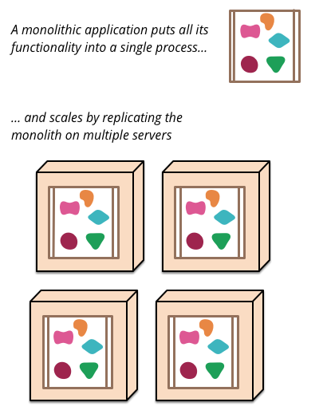
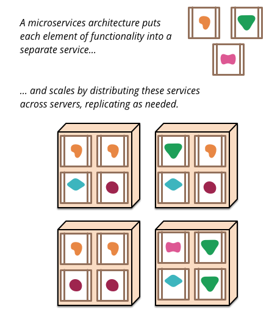
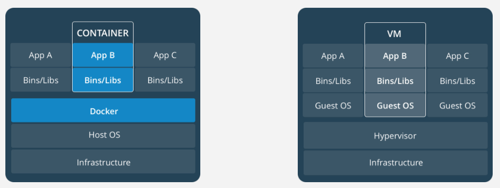
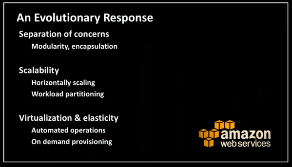

The Netflix Stack
or: How I Learned to Stop Worrying and Love Microservices
January 31st, 2018
Introduction
The Netflix Stack
or: How I Learned to Stop Worrying and Love Microservices
January 31st, 2018
Netflix & Chill with Microservices
January 31st, 2018
Lunch & Learn Outline
- What is a microservice?
- Short Technical Demo (sorry)
- Containers/Container Management
- Netflix OSS Tools
- Closing thoughts
Microservices defined
"Just like the real thing, only smaller..." - Fred Ertl, Sr., Ertl Toys
...probably
Microservices defined
"In short, the microservice architectural style is an approach to developing a single application as a suite of small services" - Martin Fowler
Microservices Microservice Architecture defined
Monolith vs. Microservice
|  |  |
But really... what is a Microservice??
- Separate business logic functions running their own processes
- Lightweight communication protocol (Generally REST)
- Horizontally scalable
A closer look:

Benefits
- Services are language independent (as long as they can communicate via HTTP)
- ...puts developers in a better position to maintain/upgrade frameworks
- Faster iterations/smaller teams (focused on business capabilities, usually cross-functional)
- Fault isolation (issues don't bring down the entire application)
- Cloud-friendly™ scaling (duplicate only the services you need to duplicate, scale down when they are not needed)
Drawbacks
- Complexity


Short Technical Demo (sorry)
Companies using Microservices
- Netflix
- Amazon
- Uber
- EBay
- Groupon
- Comcast(...)
- Yelp
- etc...
Making it work: Containers
- A container image is a lightweight, stand-alone, executable package of a piece of software that includes everything needed to run it: code, runtime, system tools, system libraries, and settings.
- Docker is the de facto leader in this space.
Making it work: Containers
Containers vs Virtual Machines

Making it work: Container Management
Needed to:
- Deploy containerized applications
- Scale containers on the fly
- Rolling updates to containerized applications
- Monitor container health
- etc...
Making it work: Container Management
Kubernetes
- Easily the leader in this space
- Started by Google in 2014
- Embraced by AWS, Azure, Oracle Cloud, etc...

Literally yesterday
Red Hat acquires CoreOS for $250 million in Kubernetes expansionMaking it work: Netflix OSS tools
- Eureka - Service Discovery
- Ribbon - Client-side load balancing
- Zuul - Edge Services (dynamic routing, security, etc.)
- Hystrix - Fault Tolerance/Circuit Breaker
- Spring Cloud Sleuth, Zipkin - Service-Level Monitoring
Closing thoughts

Closing thoughts
A microservice architecture is...
- ... a way to build scalable cloud-based applications
- ... a subset of a Service Oriented Architecture (SOA)
- ... managed similarly to our Big Data cloud presence
Links:
Mastering Chaos - A Netflix Guide to Microservices